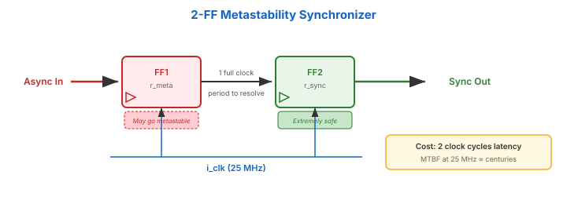

Every flip-flop has setup time and hold time. Violate either and the output enters a metastable state — neither 0 nor 1.
Normal: ____|‾‾‾‾ Clean transition
Metastable: ____/‾‾‾‾ Output hovers at ~Vdd/2
↑
undefined — may resolve to 0 or 1
Metastability can propagate, causing different flip-flops to see different values for the same signal.
The 2-FF Synchronizer

First FF may go metastable — but has a full clock period to resolve. Probability of the second FF also being metastable is astronomically low.
Cost: 2 clock cycles of latency.
When To Synchronize
Must sync: Button/switch inputs, external serial data, signals from other clock domains
Don’t sync: Signals already in your clock domain (outputs of registers driven by the same clock)
Every signal entering your clock domain from the outside world must pass through a 2-FF synchronizer. No exceptions.
Key Takeaways
① Metastability: setup/hold violation → undefined output.
② 2-FF synchronizer: standard mitigation. Cost = 2 cycles latency.
③ Synchronize every signal entering your clock domain.
④ MTBF at 25 MHz with 2-FF sync is measured in centuries.
Up Next
Button Debouncing
Video 4 of 4 · ~11 minutes
Mechanical switches bounce — here's how to clean them up.